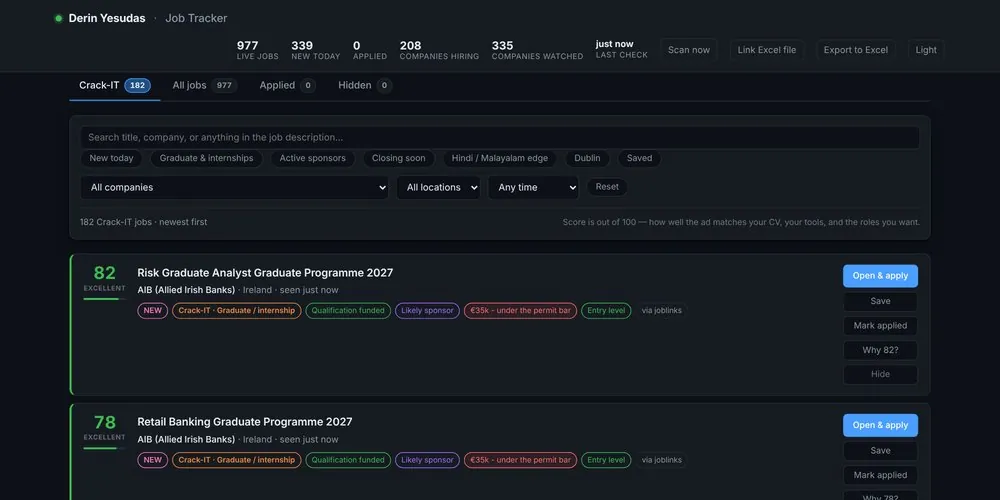
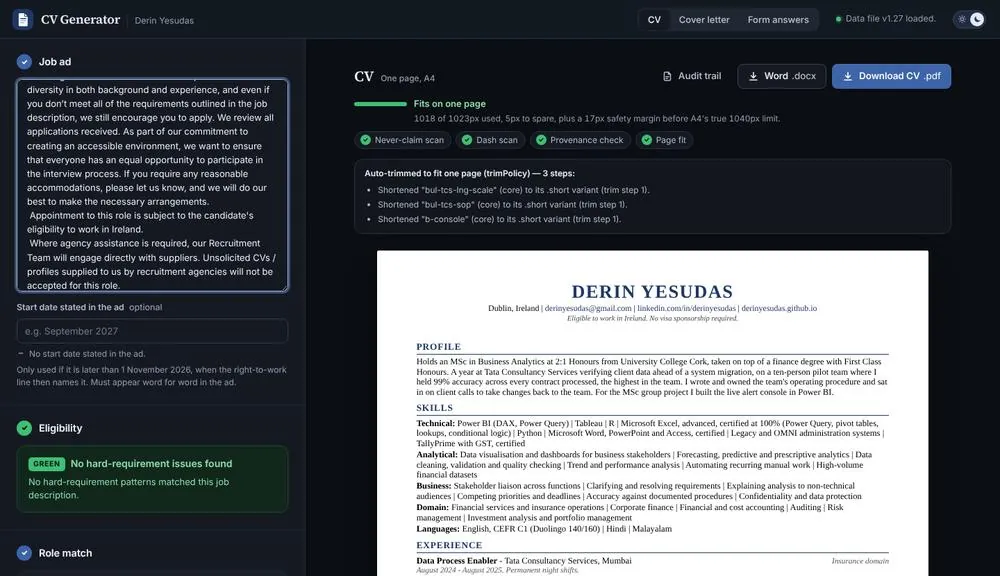

Ireland Job Tracker
It checks the career pages of more than 300 Irish employers a few times a day, and gives each graduate and junior job a score out of 100 for how well it matches my CV.
Looking for analyst, operations and graduate roles in Ireland. I bring a year of checking US insurance and pensions data at Tata Consultancy Services, an MSc in Business Analytics, and two working tools I built for my own job search.

It checks the career pages of more than 300 Irish employers a few times a day, and gives each graduate and junior job a score out of 100 for how well it matches my CV.

Paste in a job advert and it produces a one-page CV and cover letter tailored to it, using only facts I have approved. The screenshot shows it working on a real Business Analyst advert from Davy.
On my manager's recommendation, I joined a new 10-person pilot team for a US life insurer. We checked the data for 140 types of insurance contract before the client moved to a new system, with three hours to finish each contract.
A business plan for an Irish whiskey whose flavours are chosen by the people who drink it, from the size of the market to the cost and profit of each bottle.
Worked on the shop floor, at the tills and restocking shelves in a busy supermarket, including peak evening and weekend shifts.
Answered customers' questions about prices, offers and store policy, and handled complaints, passing on the ones I could not resolve.
Finished with an overall grade of 9.13 out of 10 (Cumulative Grade Point Index). The degree focused on corporate finance, risk management, investment analysis and operations research.
A year in insurance and pensions operations: first processing claims for a US pensions provider, then checking contract data for a US life insurer before it moved to a new system.
I processed death claims for a US pensions provider on its OMNI and Legacy systems, checking each case against its documents before payment was released. Within a month of joining I was licensed to process claims on my own, and worked to the same service-level agreements and targets as colleagues with years more experience.
In January 2025 my manager recommended me for a new project for a US life insurer, and I joined after an interview and an Excel test. We were a 10-person pilot team, the first team to run a brand-new process: checking group annuity contract data before the client moved to a new system. There were 140 types of contract, each with its own rules and more than 100 Excel files of 30 to 50 columns and several thousand rows, and each contract had to be finished within three hours.
I kept 99% accuracy on every contract I processed, the highest of the 10 people on the team. Teammates checked each other's work and the client reviewed the results every week, so the figure was checked by others, not just reported by me.
I wrote the team's working procedure and kept it up to date, reissuing it after each weekly change from the client so all 10 of us worked the same way. I joined client calls with my team lead, briefed the team on every change, and was selected as the first Star of the Month on the project.
I was the team's main point of contact with the client, handling their questions and complaints directly and sorting out cases where what we delivered did not match what they had asked for.
Client names are left out for confidentiality.
NVIDIA does not publish emissions data in a form that matches the UN Sustainable Development Goals (SDGs), so we built a benchmark it could compare itself against: a Power BI dashboard of 32 years of official UK emissions data.
My partI gathered the data and prepared it for the dashboard, divided the work among the team, and put together and edited the final report against the marking criteria.
We used two official UK datasets: carbon dioxide (CO₂) emissions per unit of economic output, by industry, from 1990 to 2021, and total greenhouse-gas emissions by type of gas (SDG indicators 9.4.1 and 13.2.2).
In Power BI we cleaned the data, keeping only the relevant and confirmed figures and labelling blank rows as totals, and linked the two tables by year so every chart filters together. The layout puts the headline figures at the top, shares of the total in the middle, trends and comparisons at the bottom, and filters on the right.
What it showed: emissions per pound of economic output fell by 62%, from 0.50 to 0.19 in the official figures, with no unusual values distorting the trend. Electricity and gas supply still produce far more emissions per pound than any other sector, and CO₂ is still most of the total.
Our recommendation: focus efficiency efforts on the most carbon-intensive sectors first, and look beyond CO₂ to methane and nitrous oxide.
A smart street light for cities, with device charging, directions and an SOS button, taken from the first problem statement to a detailed prototype.
My partI came up with Pathfinder, our idea for helping people find their way around the city, and helped create the user personas.
We began by understanding the people involved, with user personas, a map of everyone affected and a clear problem statement, before anyone proposed a solution.
We used IBM's six core purposes for AI as a guide and chose three: richer interactions, confident recommendations, and spotting and reducing risks.
A rapid sketching exercise (Crazy 8s) gave us ten ideas. Four were workable; the other six were dropped because they already existed, cost too much or could not be built.
We combined the four into one design: an interactive light post with charging for phones, e-bikes and wheelchairs, a navigation screen, an SOS call button and a rain shelter, plus the GlowConnect app showing which chargers are free.
Feedback warned that people might make prank SOS calls, so we changed the design: every SOS call is recorded, and users are told this before they press the button.
We then built a detailed prototype in Figma, mapped how the service would run behind the scenes (a service blueprint), and tested it.
A first, exploratory look at 50,000 customer records: the groundwork needed before building any model to predict which customers will leave.
The data covered 50,000 customers and 35 pieces of information about each: who they were, their billing, how they used the service and their contact with customer support. Far more stayed than left: 37,000 stayed and 13,000 left.
Most customers were fairly new, with few long-standing ones, and a small number paid much more than everyone else.
The share of customers leaving was almost the same in every customer segment (25.6% to 26.5%), so the type of customer explained very little. Plan type and payment method made more difference, which points to problems with billing and service rather than who the customer was.
There was no significant missing data, so nothing had to be filled in or removed.
A manufacturer had promised to report on its sustainability under EU rules, but its data was spread across dozens of old systems. We designed a reporting system that would let it measure and report its progress.
My partI built the ontology diagram (a map of how all the data connects) in draw.io, and shaped the structure and flow of the report.
Nous Logic had publicly committed to two of the UN Sustainable Development Goals (industry and innovation, and responsible production) and to reporting under the EU's Corporate Sustainability Reporting Directive (CSRD). But its data sat in dozens of systems, spread across departments, countries and formats.
Acting as outside consultants, we proposed a digital reporting system that links the data where it already sits (a 'data fabric'), and worked it through in detail using the water measures in the European Sustainability Reporting Standards (ESRS).
My ontology diagram mapped every measure, what it describes and how it connects to the others, in a form a computer can read. The report brought one teammate's technical design and another's research together into one argument.
People throw away food that is still safe because they treat a “best before” date as a safety deadline. Over five design sprints (short, focused rounds of work), we built a data strategy and a design to change that.
Our solution: screens in the aisles explaining what “best before” and “use by” really mean, pack sizes for single people and families, and loyalty points for buying items close to their date, which shoppers can swap for mixed bags of surplus and fresh stock. It cuts waste both on the shelf and in the stockroom.
Each sprint added one piece to our Data Value Map (a one-page plan of what data creates value, and for whom), revised after feedback from the class: a two-by-two priority grid, a benefits table, and a map of who is responsible for each piece of data.
The benefits table sorted actions into what to start, improve and stop, and named an owner for every benefit: retailers, manufacturers, public-health agencies or consumers. A benefit nobody owns does not happen.
My own reflection: I came in with no science background, and on day one I compared the Data Value Map to a SWOT analysis to understand it. I was not confident speaking in public. After five rounds of presenting our work to the class, I was comfortable presenting, and comfortable questioning ideas constructively.
Worked full shifts in a busy hotel kitchen while studying full-time for my MSc, with no absences in seven months.
My written reference from the hotel praises my punctuality and accuracy.
Purchasing power parity (PPP) says exchange rates should move so that the same goods cost the same in both countries. For Japan and the US from 2000 to 2019, it did not hold in the short run, but the exchange rate and prices did move together over the long run.
My partI wrote the literature review, the section on relative purchasing power parity, and the discussion, which compared our results with well-known research on why exchange rates are so hard to forecast.
We used monthly Japan-US exchange-rate and price data from FRED, the US Federal Reserve's economic database (January 2000 to December 2019), and worked in four stages: testing whether each series was stable over time, testing PPP directly, testing for a long-run link, and forecasting.
None of the series was stable over time (each was non-stationary): the exchange rates and both countries' price indices all drifted. Both versions of PPP, absolute and relative, were rejected, as most earlier studies also found.
A cointegration test told the other half of the story: over the long run, the exchange rate and the price gap between the two countries do move together, even though they drift far apart in the short run.
The best forecasting model was ARIMA(2,1,0), an autoregressive integrated moving average model, chosen on both the Akaike information criterion (AIC) and the Bayesian information criterion (BIC), with no pattern left in its errors. Its 12-month forecast keeps the real exchange rate roughly flat within a widening range of uncertainty. It did not beat a simple 'no change' forecast, which matches the classic finding (Meese and Rogoff, 1983) that exchange rates move almost at random in the short term.
We built an optimisation model of a luxury perfume maker's whole supply chain. It finds the cheapest way to meet demand, with the cost of the company's carbon emissions counted as part of that cost. The biggest finding was that one supplier could stop everything.
My partI wrote the problem analysis and the recommendations sections of the report.
The network: four suppliers, three factories in France, two warehouses and six cities with shops, with demand of 275,000 units a month. In the base case the model met all of it at €49.5 million a month, 87.7% of which was transport.
The data in the brief did not add up: factory capacity, warehouse capacity and one supplier's limit were all below demand, so no plan could meet it. We spotted this, documented it and adjusted the data before building the model.
Testing what could go wrong found the weak point. If the only supplier of a rare extract fails, costs rise to €81.5 million a month and no orders can be filled. A shutdown at the Bordeaux factory would leave only 65.5% of orders filled. Across nine possible scenarios the expected cost was €55.9 million, and in 1,000 random simulations (Monte Carlo), nine out of ten outcomes fell between €43.1 million and €72.7 million.
Our main recommendation: find a second supplier for that extract now. In the meantime, two weeks of spare stock (3,000 kg) costs €180,000 to hold, while the disruption it protects against would cost about 450 times as much.
We used Claude to help write the code, and rejected three of its suggestions after checking them: a service-level rule that made every scenario impossible to solve, a staffing limit that capped output at 15,542 units, and overtime options the factories never needed.
A structured review of research on stock market manipulation, using a step-by-step method for finding the themes that studies share. Our final MSc project later tackled the same problem.
My partI identified the patterns across the papers and helped write the report.
We worked through eight peer-reviewed papers over five sprints, adding papers each round.
We split into two groups of three. Each group tagged the key ideas in all eight papers on its own before we compared notes, and every paper first had to be summed up in one clear phrase.
We then settled any disagreements, agreed one main tag per paper and compared them side by side in a table: an idea that kept coming up became a theme, and each theme became a column.
The result was three themes in two groups: how manipulation works, and the technology used to detect it.
Our final MSc project looked for signs of three kinds of market manipulation (pump-and-dump, spoofing and wash trading) in a year of trading in smaller US companies' shares, and built a console that shows a reviewer the riskiest cases first.
My partI built the Live Alert Console in Power BI, helped source the trading data, wrote sections of the report and the project journal, and structured the presentation script.
We used 467,799 real trading records from 2024 for the roughly 2,000 smaller US companies in the Russell 2000 index. The project had an industry mentor from Deloitte.
The Live Alert Console lists the highest-risk trading events first, with the reason each one was flagged, so a compliance reviewer knows where to start without opening the full dashboard.
Beyond the console, I helped source the trading data, wrote several sections of the 38-page report and the project journal, structured the presentation script, and co-created a short scenario that explained a pump-and-dump scheme to a non-specialist audience.
We delivered it in two versions, sharpening its purpose after feedback from the module lead each time.
A business plan for an Irish whiskey whose flavours are chosen by the people who drink it, from the size of the market to the cost and profit of each bottle.
My partI led the team: I did all the research and delegated the rest of the work to my teammates.
The opportunity: Irish whiskey sold 16.15 million cases worldwide in 2024, worth $5.3 billion and growing 7.1% a year to 2030, yet no brand lets its drinkers help create the product. Every brand designs for its customers, not with them.
Ireland buys 707,000 nine-litre cases a year, 26% of all spirits sold here. The US buys 5.47 million cases, 34% of the Irish whiskey sold worldwide.
How it works (Listen, Develop, Release): the community suggests and votes on flavours, the top five go to blind tastings, and the Master Blender can veto anything below standard. The winning whiskey is bottled in a run of 3,000, with the winning contributor's name on every bottle.
Launch in Ireland first, then the US in year two, starting with Irish-American communities, then Europe in year three.
We kept the numbers conservative: a €55 retail price, a 64% gross margin on the first small batch, 68% in year one (12,000 bottles, €660,000 in revenue), and a projected 74% by year three (55,000 bottles) as the cost of making each bottle falls from €20 to €14.30.
Every figure has a source (Drinks Ireland, the drinks-market analysts IWSR, and the Irish Whiskey Association), and I prepared answers to the judges' likely questions on each one.
The course covered data visualisation, predictive and prescriptive analytics, business forecasting, Python and applied research.
Working in retail three to four days a week, and spending the rest of the week on my job search.
It checks the career pages of more than 300 Irish employers a few times a day, and gives each graduate and junior job a score out of 100 for how well it matches my CV.
Which employers it watches: companies on the Irish government's employment-permit register, 296 employers I researched by hand (their careers page, sector and the ways in for graduates), and a list of large graduate employers.
How it reads them: each careers page is matched against 22 common recruitment platforms, with five back-up methods if none of them fits. An employer is only added once real jobs have come through, never on a guess.
How it scores: each job gets a score out of 100 based on my real experience, not on shared keywords. The job title has to match a role I can show evidence for, and tools, industry, location and languages add to the score. Every job shows why it scored what it did.
What I got wrong at first: the first version rated 34% of jobs a good match, until I read them. A food-production job scored well just for mentioning shift reports. I rebuilt the scoring so keywords alone count for nothing, and good matches fell to 2%. A short list I trust beats a long list I ignore.
A quieter problem: for a day the board showed 40 companies while the data held 250. There was no error message; the step that publishes the board simply was not running. Now each scan publishes the board itself, and I check the live page, not just the logs.
Built with Claude: I designed what it does, researched the employer list and wrote the scoring rules. Claude wrote the code.
Paste in a job advert and get a one-page CV and cover letter tailored to it, built only from facts I have approved, with four checks that stop it claiming anything I cannot back up.
Paste in the advert and it fills in the company, role, city, team, who to address the letter to and the start date. Each field shows where in the advert it came from, and anything the advert does not say is flagged rather than guessed.
It checks the advert for requirements I do not meet, picks the closest of eight CV templates, and shows which of the advert's key terms the CV covers.
It never writes anything new. Every section is chosen from versions I have already approved; the tool only decides which fits best. If a claim is not in my bank of approved facts, it cannot appear.
Four checks run before it produces anything: no claim I cannot back up, every sentence traced to an approved fact, a house-style check, and a one-page fit that trims automatically. It downloads as a PDF or Word file, with a record of every choice it made.
Built with Claude: I wrote the bank of approved facts and every rule it follows, and tested it on real Irish job adverts. Claude wrote the code. Every new version must pass more than 270 automated tests.
Split honestly, because the fastest way to lose an interview is to claim something in writing you cannot do in the room.
All India Council for Professional Training and Research, 2024
Claude Academy, Anthropic, 2026
Business, data and risk analyst roles, operations roles (Know Your Customer and anti-money laundering checks, payments, asset servicing and trade support) and graduate programmes, in banking, insurance and pensions, the Big 4 and consulting firms, and shared services centres.
derinyesudas@gmail.com